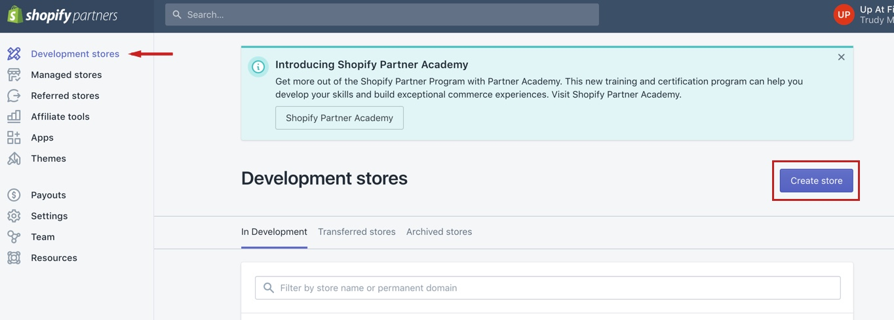
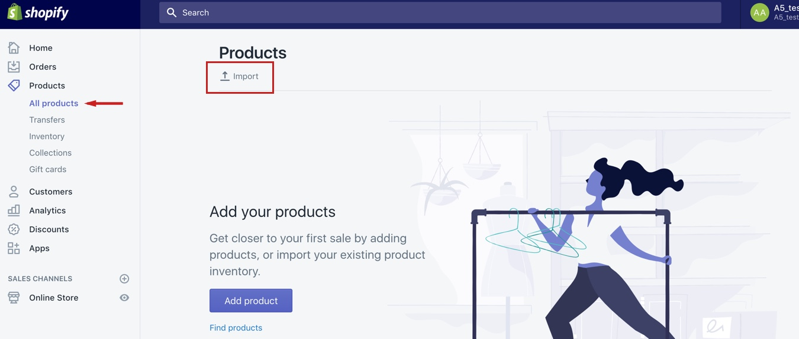
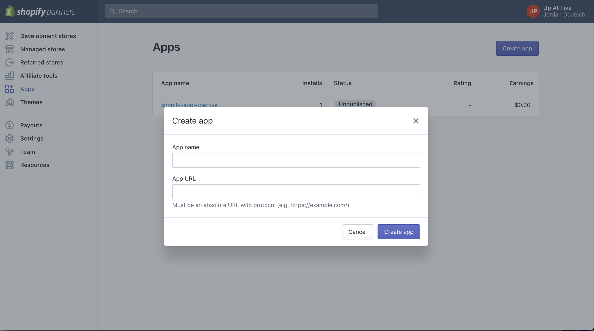
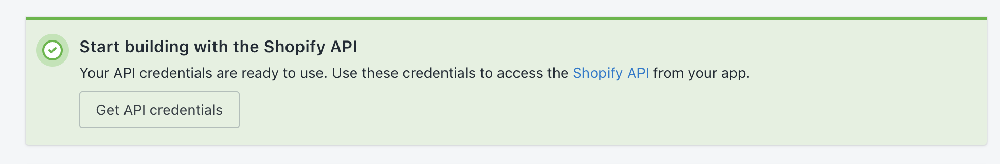
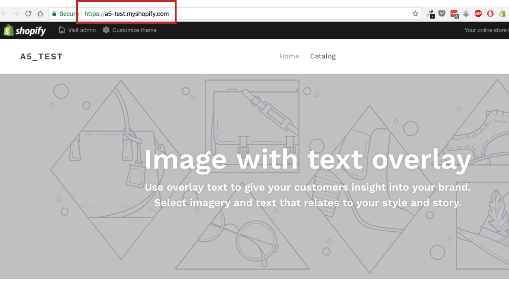
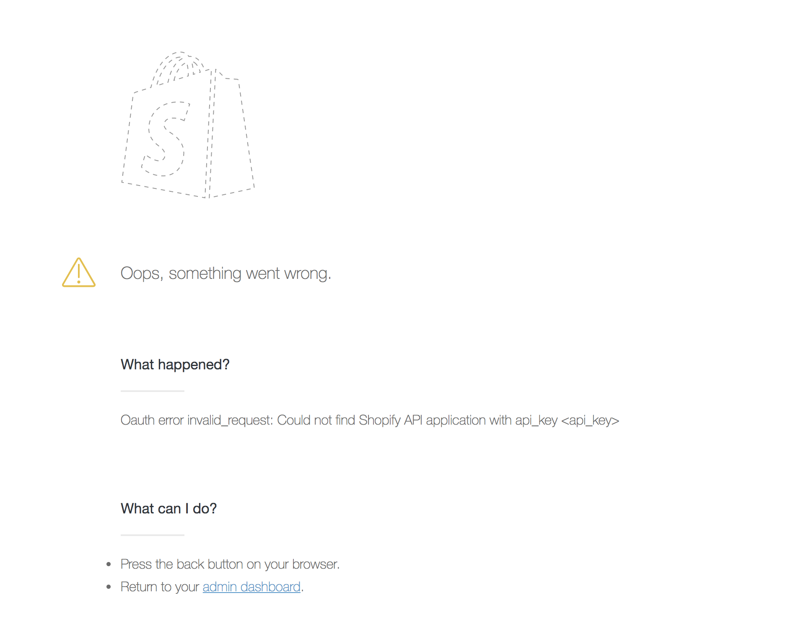
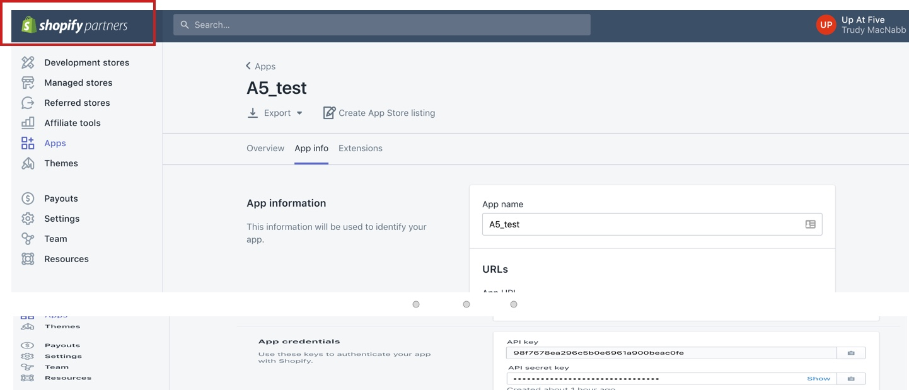
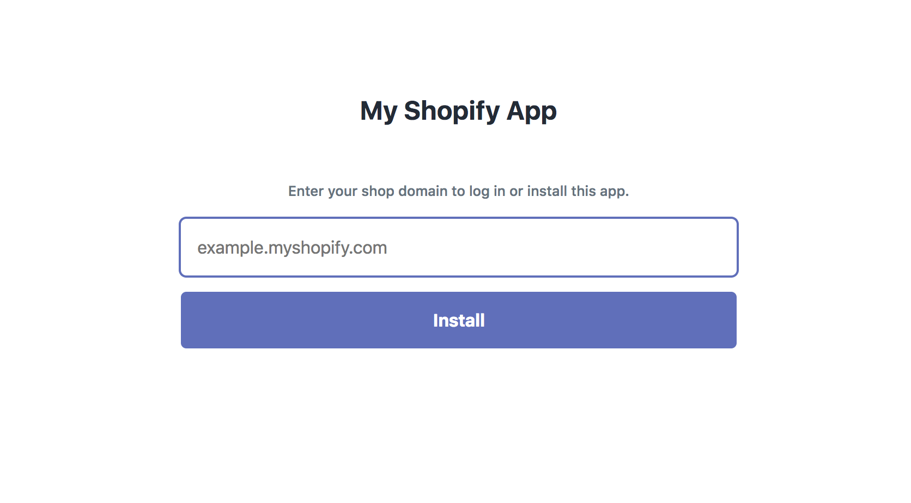
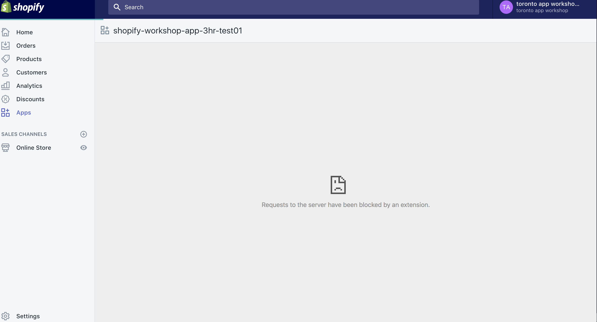

Shopify App Workshop
Welcome to Shopify App Development
Shopify embedded apps are a wonderful way to extend the functionality of your store and provide a seamless experience for the vendor. Today we will go through setting up a custom embeded application. We will be leveraging tools provided by Shopify to help us get our app authenticated and up and running. One of the major benefits of creating an app in this way is that we will be able to embed the app directly in our merchants Shopify admin.
Getting Started on Shopify
Shopify offers a multitude of resources to help with development. One of these tools is the Shopify partner account. With a partner account you can create development stores to test out your themes and applicaitons.
To get started today make sure you have a partner account. You can sign up for a partner account
Now create a development store. This will act as a sandbox where we can use our app. Once you have created your development store log in to the store admin and take a look around.
In the app we create today we are going to work with product information from the Shopify store. Let's set up our store with some products so that we have something to look at in our app later. Download this product csv and upload it to the products section in your store.
To view your store you can click on the eye icon besides online store
Create a new rails application
Now that we have our store set up we are going to create our application. We'll start by creating a new Rails application and then we'll set it up to authenticate with our Shopify store.
If you're not familiar with Ruby on Rails, no problem. We are going to use a few terminal commands to create a new Ruby on Rails application and set it up with the Shopify App Gem to fecilitate authenticaiton.
To start open your terminal and navigate to wherever on your computer you would like to keep your application. Once in the correct directory, create a new Ruby on Rails application by running:
rails new [appname]
Then go into the root directory of your app
$ cd [appname]
Once in the root directory of your app run
echo "gem 'shopify_app'" >> Gemfile
This will add the shopify_app gem to your gemfile. You can open up your Gemfile and see wherer the gem was added
Finally, still in the root directory, run
$ bundle install
That gives us the base set up for our applicaiton. Let's start up the rails server and check out our app locally. Running the following command in the root directory of your app will start up the server.
rails s
Get Your App Token and Secret
Now that we have created our Rails application we are going to generate an app token and secret on the Shopify end.
Back in your partner dashboard navigate to the apps tab and create a new app.
You can call your app whatever you like. Where it says app url for now we are going to put in the localhost address where our rails application is being served. This is likely http://localhost:3000/. Make sure you include the url protocol.
Create the app and then under overview make sure you white list the following redirection url http://localhost:3000/auth/shopify/callback
Now that you have created the app, we are going to grab the credentials we need to authenticate. At the top you'll see a green box with a button to Get API credentials.
Down at the bottom of the screen in the App credentials section you'll see you have your API key and API secret key. Keep this page open as we will be using these in a second.
Back in your terminal, still in the root directory of your app, we are going to run the shopify app gem default generator to create the install, shop and home_controller.
rails generate shopify_app --apikey your_api_key --secret your_secret
The generator will create a new migration. Under db > migrate in your rails app check out the create shops migration. It should look something like this:
class CreateShops < ActiveRecord::Migration[5.0]
def self.up
create_table :shops do |t|
t.string :shopify_domain, null: false
t.string :shopify_token, null: false
t.timestamps
end
add_index :shops, :shopify_domain, unique: true
end
def self.down
drop_table :shops
end
end
If all looks good run the migration
$ rake db:migrate
Check out the schema.rb file and you'll see you should have a shops table.
Let's bring it all together. In your terminal start up your rails application by running
$ rails s
Head to http://localhost:3000/ and you should see a screen where you can input the shop name to connect your app. Enter in the url for your development store.
You'll probably see a screen that looks something like this:
We're seeing this because we haven't finished hooking up our Rails applciaiton with the app credentials we generated in Shopify. We'll do that next✨
Setting Up Your Environment Variables
In order to authenticate our app we need to include the api key and secret, but we want to make sure that these are not publicly available. To do so we will use the rails dotenv gem.
In your gemfile add:
#Gemfile
gem 'dotenv-rails'
In your terminal run
$ bundle install
In the root of your project create a new .env file. Make sure to include this file in your .gitignore so you do not push your private keys public later.
In your .env file add:
#.env
api_key=your_api_key
api_secret=your_api_secret
In the config > initializers > shopify_app.rb file add the reference to your api_key and api_secret environment variables. It will look something like this:
ShopifyApp.configure do |config|
config.application_name = "My Shopify App"
config.api_key = ENV['api_key']
config.secret = ENV['api_secret']
config.scope = "read_orders, read_products"
config.embedded_app = true
config.after_authenticate_job = false
config.session_repository = Shop
end
We're just about ready to connect the app to our development store. We just need to check one more configuration on the app we created in the Shopify Partner dashboard to make sure it is enabled as an embeded application. Click on the app you created and navigate to the extensions tab. Make sure that the section Embed in Shopify admin is enabled.
Great! We are now ready to install our app on our dev store. Make sure your rails server is running and navigate to http://localhost:3000.
Enter the name of your store and install your app.
When you open up your app you'll likely see a screen like this:
We will be addressing this next.
Setting up ngrok for secure local development
We are seeing the error screen above because our app on http://localhost:3000 is not being served over a secure network. In order to get our embeded app to work we need to make sure our app has an SSL certificate. To set this up for local development we are going to use a service called ngrok.
Let's get ngrok set up.
Sign up or log in to the ngrok site and download the version of ngrok for your system.
Once you have ngrok installed navigate in your terminal to the same location on your computer where you installed ngrok and run
./ngrok http 3000
This will create a forwarding URL that will point to your local server port 3000.
Back in your partner dahsboard, under app info, we are going to change the app URL to be the secure URL provided by ngrok. We'll also add this url with the redirect to the whitelisted redirect URLS. Something like https://ngrokurl.io/auth/shopify/callback.
Restart your rails server and navigate back to the app in your development store
You should now see the home view for your app with a list of linked products 🙌
** Note ** on the free version of ngrok each time the tunnel is quit and restarted a new URL will be generated. You would then need to update this URL in your app that you created in your Shopify Partner Account.
Displaying Content in Our Application
We are going to be displaying a list of all of our product from our shop in our app that will link to an individual page for each product.
To do this let's create a new controller for our products. In the controller folder make a new file called products_controller.rb. Open the file and add the following:
class ProductsController < ShopifyApp::AuthenticatedController
end
Note that we are going to set up our Products controller to inheret from the Shopify App Authenticated controller (this was generated using the app gem).
Next, in the controller let's create two actions, one for the products index and one for the product individual page
class ProductsController < ShopifyApp::AuthenticatedController
def index
end
def show
end
end
Now that we have created the controller for our Products, let's set up the views. In the views folder, create a new folder called products. In there we are going to create two new files index.html.erb and show.html.erb. These correspond to the two methods we set up in our controller earlier.
Add a title in each html file correpsonding to the view.
The final piece to set up our index and single view is to configure the routes. In the config folder open up the routes.rb file.
We are going to create two new routes, one to the product index page and the other to the single product page
get 'products', to: 'products#index'
get 'products/:id', to: 'products#show', as: 'product'
Display Product Information
In order to display information from our Shopify store in our app we need to query the Admin API. We are going to leverage the modules provided by the shopify app gem to make these requests.
Back in the products controller, let's start by defining a products variable as the first 10 products called in from our store:
def index
@products = ShopifyAPI::Product.find(:all, params: { limit: 10 })
end
Now let's make a request for a single product in the show action
def show
@product = ShopifyAPI::Product.find(params[:id])
end
Here we will use the id parameter from the url to make a request for that particular product. Later on in our views when we are setting up the links to our single product page we'll make sure to pass the Shopify product id to our url helper as that is what we'll be using to make a request for the specific product.
Now that we have set up our controller let's actually display the product info on our page. Starting with the homepage, we'll make a link to 'View Products'
<%= link_to 'View Products', products_path%>
Now in the products/index.html.erb let's list out our product with links to the single product page.
<% @products.each do |product|%>
<%= link_to product.title, product_path(product)%>
<% end %>
Finally on the product/show.html.erb page let's display some product info.
<%= @product.title %>
<%= @product.vendor%>

tags: <%= @product.tags%>